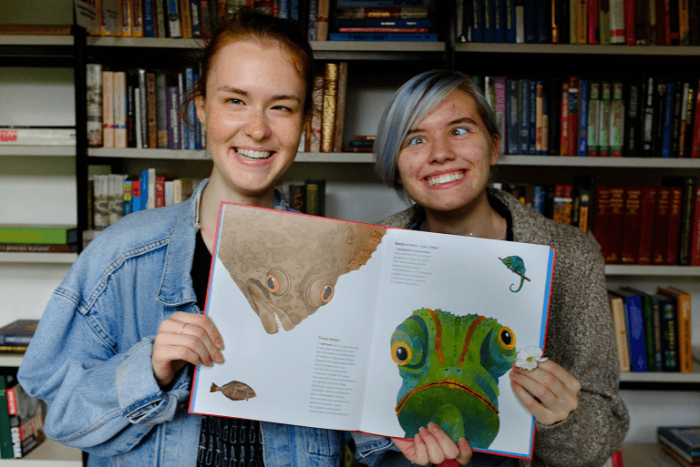

Волонтёрство - один из лучших способов осуществления добрых, социально-полезных инициатив,
реализации собственного творческого потенциала.
Фактически, волонтёрство можно назвать стартовой площадкой в профессиональной карьере
молодых людей, активно занимающихся этой деятельностью. Сформирует навыки общения, и
будет для молодых людей своего рода моделью взрослой жизни.
В нашей библиотеке проводится немало мероприятий с участием наших замечательных
волонтеров, а впереди, в рамках реализации наших творческих проектов, еще много самых
разнообразных встреч с библиотечными добровольцами.
